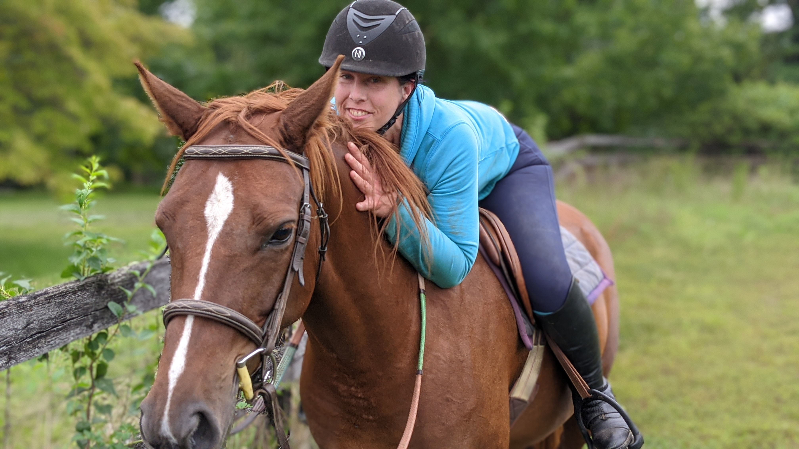
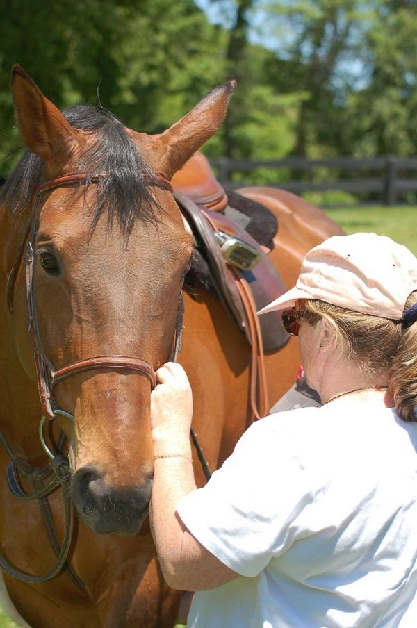
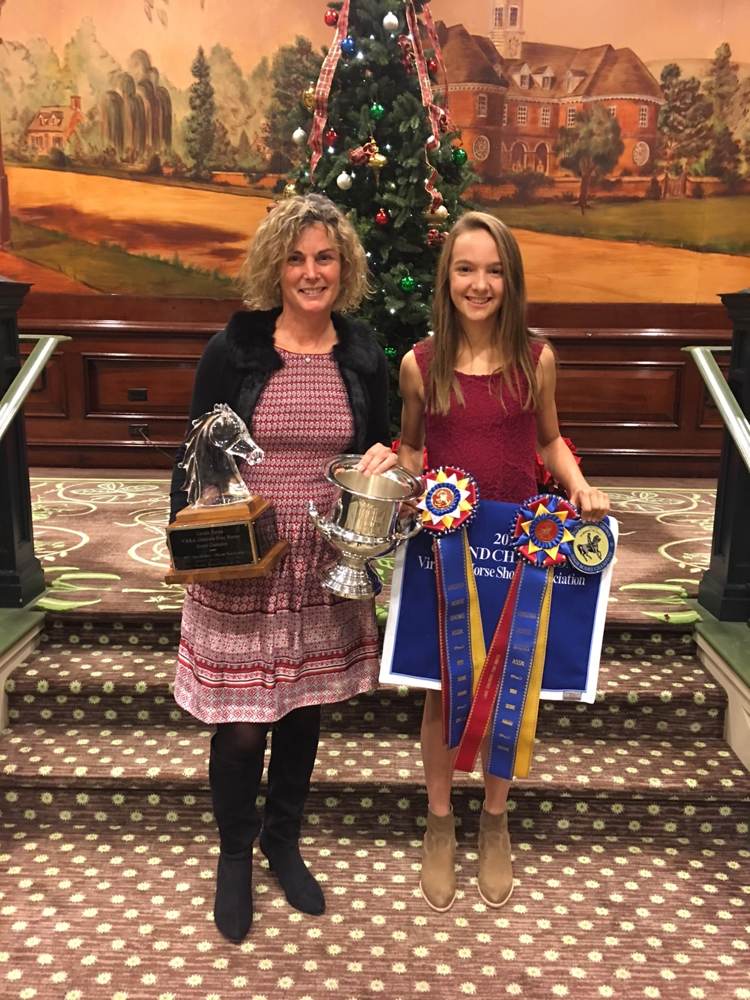

Kids Corner
Safe, cheerful, pony-kid magic.
Free with an adult account, moderated before posts go live, no direct private messaging.

Kids Corner
The precious part, without making it corny

How Kids Corner stays safe
Free with an adult paid account.
The grown-up holds the account. Kids get a simple, visual space for stories, art, trivia, brave moments, and pony love.

A kid, a pony, one lesson learned, and one thing they want to try next.

Number pins, butterflies, tiny ribbons, and the person who helped.

Drawings, stall-door masterpieces, ribbon photos, and pony portraits.

First canter, first course, first lead change, first time trying again.

Pony geography, tack facts, pony breeds, and show-ring words.

The sweetest lessons, even when the pony was being a tiny professor.

Tricolors, fifth place, clear rounds, and brave moments all belong.